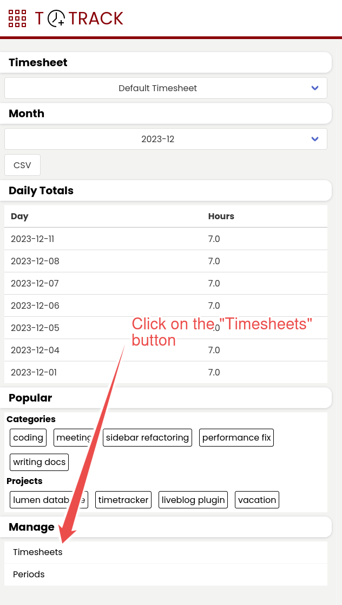
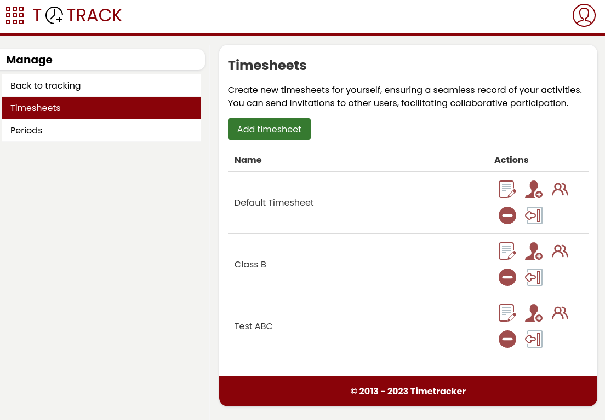
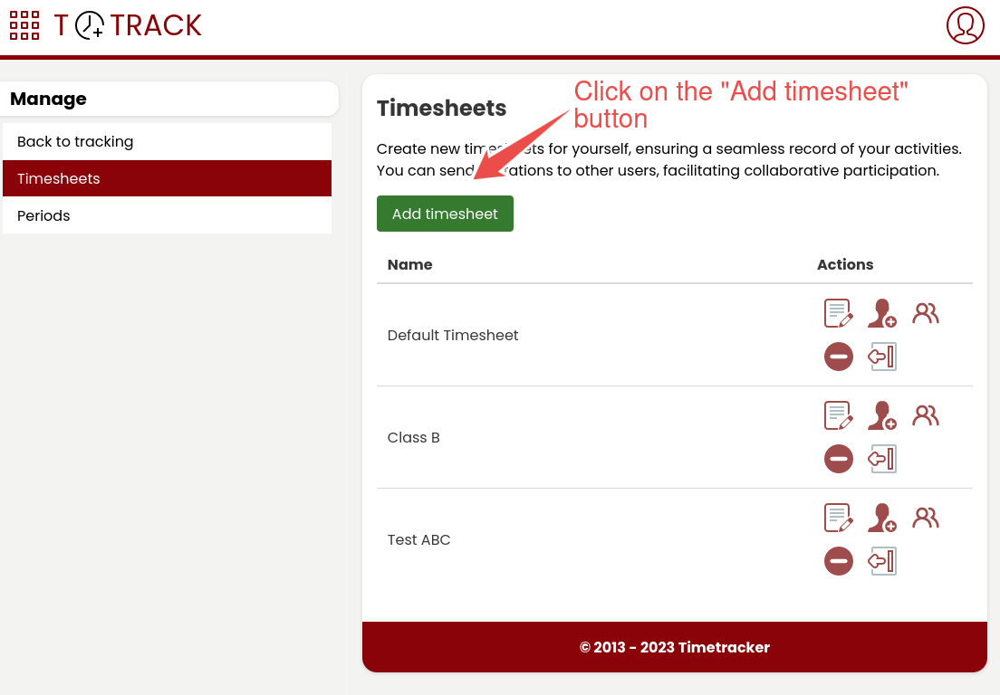
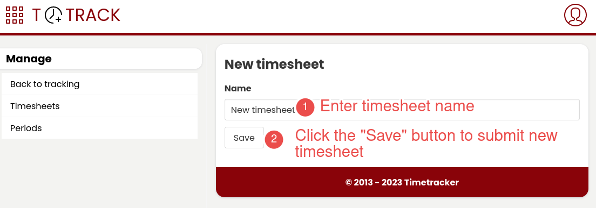
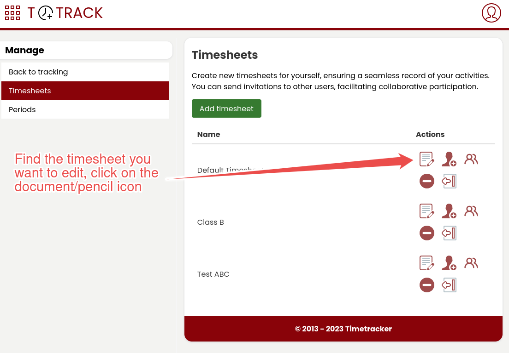
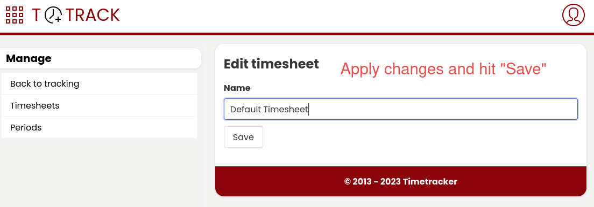
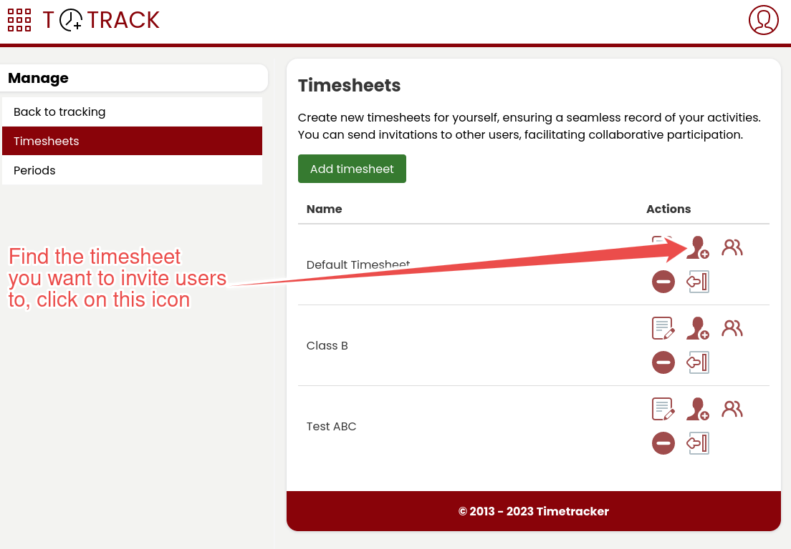
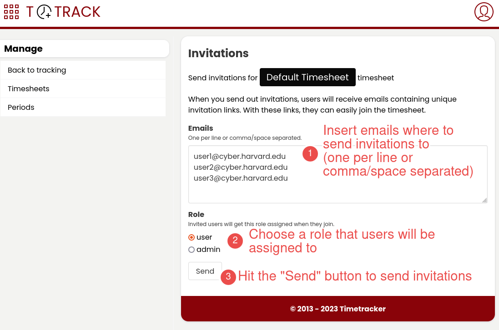
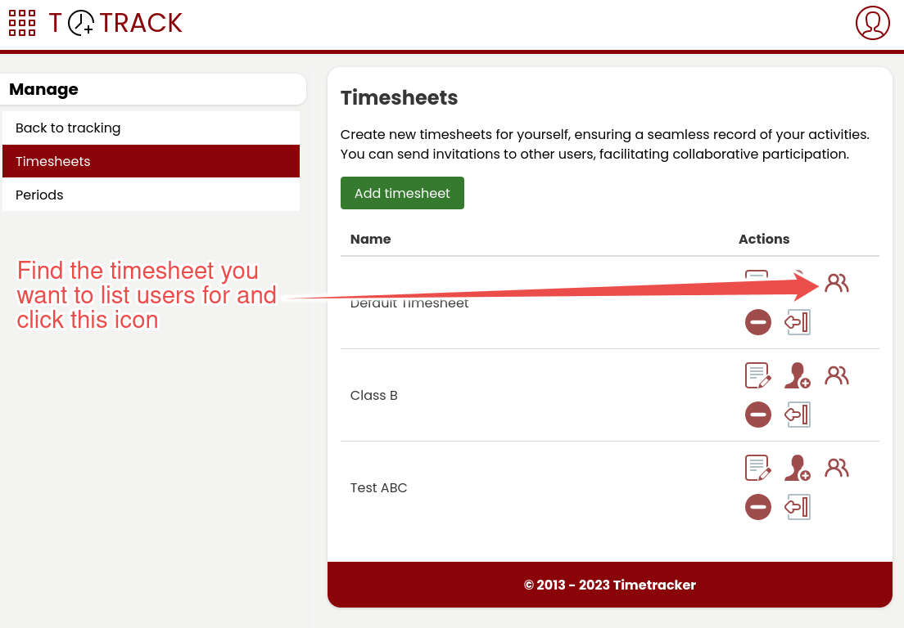
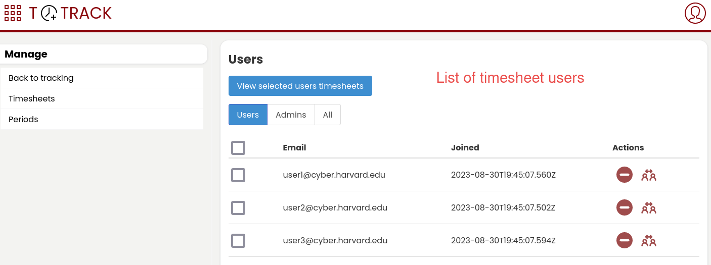

Managing timesheets
Listing timesheets
This will move you to the timesheets list view.
Creating new timesheet

Editing timesheet

Removing timesheet
Warning
Removing timesheets will delete all associated time entries.
Inviting users

Listing timesheet users
This will move you to the timesheet users list view.
Removing user from timesheet
Warning
Removing a user from a timesheet means that the user won’t be able to use it any more and it will remove all their time entries.
Changing user role in timesheet
Note
Modifying a user’s role will apply only to the specific timesheet in question and will not impact their role in any other timesheets.